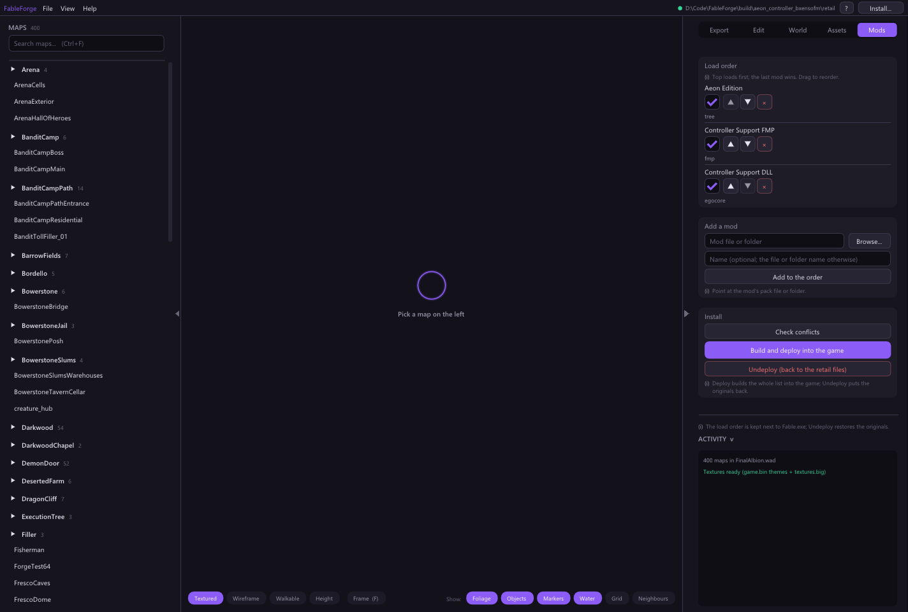
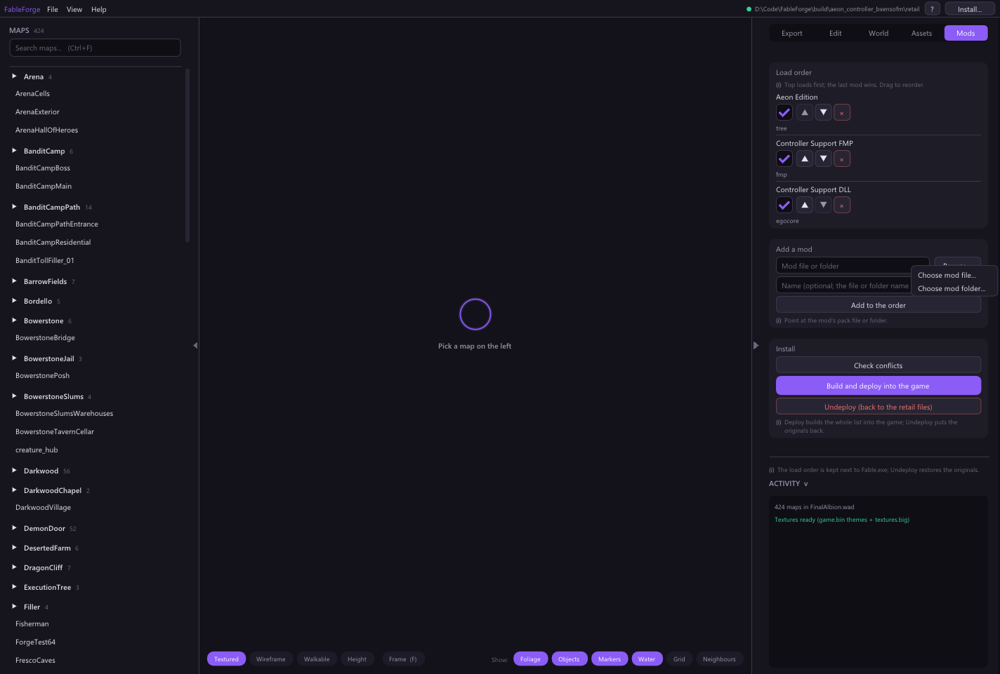
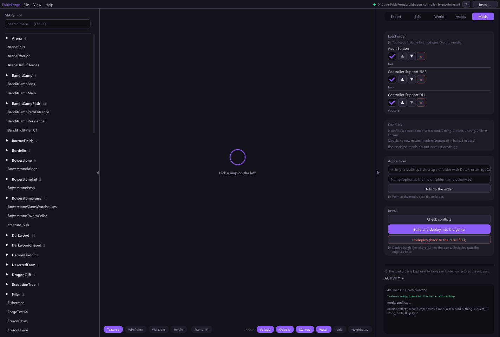
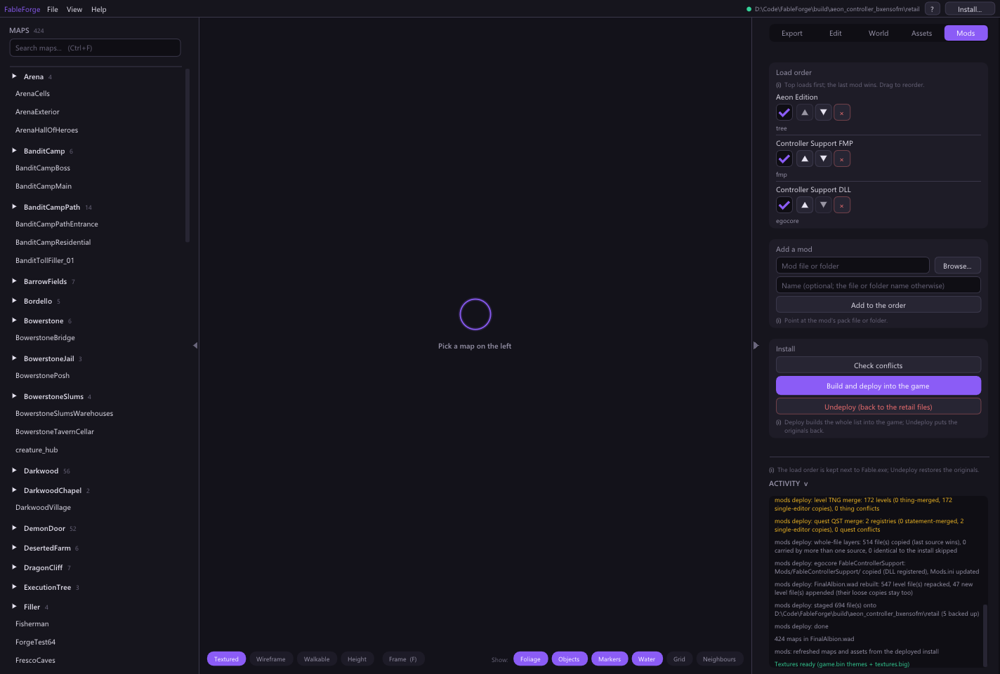

FABLEFORGE · A GUIDE FOR PERODIS
Aeon Edition + Controller Support
Prepare the modded game on a Windows PC, then copy it to your Retroid setup. Forge applies the controller FMP, so you do not need Chocolate Box or Fable Explorer for this route.
This guide assumes you have access to a Windows PC. Forge’s composed files have been checked offline; this is not a verified fix for a Retroid crash. Forge is a Windows x64 application. This build has not been tested on the Pocket 5 or its Windows compatibility environment.
1Start with a clean game copy
Use a separate, clean copy of Fable: The Lost Chapters (2005) that launches successfully. Keep your working game and saves backed up. Close Fable and EgoCore while Forge writes files.
The controller author specifies the Steam version of Fable.exe. Anniversary is a different game. A reinstall over leftover mod files may still leave a modified folder; use a genuinely clean target folder.
For this recipe, keep the original data/Levels/FinalAlbion.wad in that clean copy. Do not run a WAD decompiler or rename/delete the WAD. Forge rebuilds it with the composed level files. If your previous attempt already removed it, restart with the clean copy.
No FreeRoam step is needed with Forge for this setup. Skip the standalone FreeRoam extraction step in Aeon?s older installation instructions, and do not add Freeroam.fmp. Forge composes the level files and rebuilds the WAD itself. Aeon 5.03 already has the walkability changes on all 76 maps in that FMP; applying it afterward could replace Aeon?s other terrain edits. Forge does not automatically make every map walkable.
2Prepare three mod sources
Download Aeon Edition and Controller Support’s legacy FMP download from their authors. The file check used Aeon 5.03 and Controller Support version 1. Extract the archives outside the game folder.
Keep the complete Aeon extraction, including its graphics, textures, levels and Bones files. Choose the folder directly containing Data, not the Data folder itself.
Put only FableControllerSupport.dll in a separate folder named exactly FableControllerSupport. Keep the FMP separately:
1Choose a folderAeon Edition
AeonEditionContains the complete Data folderThe overhaul: its game data, graphics, textures and levels.
Select the parent folder, not Data itself.
2Choose a fileController game data
ControllerSupport.fmpInstalls the game-data changes that controller support needs.
Forge applies this package.
3Choose a folderController runtime
FableControllerSupportContains only FableControllerSupport.dllRuns alongside Fable to provide the controller functionality.
EgoCore loads this DLL when you play.
Do not include the controller mod’s Data folder in the DLL folder. The FMP supplies the asset changes in this recipe; the DLL supplies the running-game controller support.
Why add the DLL to Forge if EgoCore loads it? Forge installs the DLL in the right folder and enables it in Mods.ini. EgoCore loads that installed DLL when you play. It is installed once and loaded once. You can instead copy the DLL and enable it manually in EgoCore; in that case, omit the DLL entry from Forge’s order. This walkthrough uses Forge to manage all three installation sources.
3Open Forge and choose the game copy
Extract the supplied Forge ZIP completely and open FableForge.exe. Keep its companion files and folders together.
In Setup → Choose the install folder…, select your clean game folder containing Fable.exe. Setup also opens from the install status in the header. Confirm the selected path is your intended game copy, then open the Mods tab.
4Add the mods in this order
In Add a mod, click Browse… → Choose mod file… or Choose mod folder…. Select the source, give it the name below, and click Add to the order. You can still type or paste a path. Scroll the right panel if needed. Add these from top to bottom:
- Aeon Edition — the folder containing its complete
Data tree. - Controller Support FMP —
ControllerSupport.fmp. - Controller Support DLL — your DLL-only
FableControllerSupport folder.
All three must be enabled. Drag a row to correct its position. Keep those source folders in place; Forge uses them again when rebuilding.

The tested three-layer order. Screenshots use a disposable test game folder; your paths will differ. Click an image to enlarge it.

Use Browse to select a file or folder. Typing and pasting paths still work.
5Check, then build and deploy
Click Check conflicts and wait for it to finish. Review the report and Activity log. The checked versions produced zero definition field conflicts and no missing direct model references. A different result deserves investigation before deploying.
Click Build and deploy into the game. Wait for the Activity log to report mods deploy: done. If it reports an error, stop at that error; do not proceed as though installation succeeded.

Check conflicts first, then use Build and deploy.
Forge writes the composed FinalAlbion.wad, applies the FMP changes, copies the DLL to Mods/FableControllerSupport/, and enables that DLL in Mods.ini. Originals are retained for Forge’s Undeploy action.

Actual GUI deployment, checked against the independently built output.
6Use EgoCore to load the DLL
Set up EgoCore using the controller author’s linked instructions for this game copy. Forge does not bundle or replace the runtime DLL loader.
In EgoCore, enable Controller Support and launch through EgoCore. If it offers to decompile the WAD, skip that step, following Aeon’s advice for this combination. Do not install the controller’s full EgoCore Data package over the Forge result.
Before launching, verify Mods/FableControllerSupport/ contains the DLL and no Data folder. Otherwise EgoCore may compile another set of controller definitions over Aeon’s changes.
Test on the PC first if possible. Use a mouse to get through the main menu and load a game: the mod does not add controller navigation to that menu or the save/load settings.
7Transfer and test on the Retroid
Copy the complete prepared game folder to a separate location in the Retroid Windows environment you already use, including Mods, Mods.ini and the EgoCore runtime files. Keep your previous working copy available. Launch through the same DLL-loading route; launching plain Fable.exe may omit controller support.
If it crashes, record the exact point: before the menu, while loading, or in a particular area. Check the unmodified game, Aeon alone, and then this combination in separate copies. Share the Windows environment/version, game executable version, and available EgoCore/crash logs. A controller mapping problem and a game launch crash need different troubleshooting.
What was checked: Forge composed the three sources over retail files, verified controller bindings changed from 70 to 141, compared all 843 Aeon level payloads with the effective composed output, and found no missing direct model references. The rebuilt WAD and GUI deployment were checked. These are file checks, not a gameplay or Retroid compatibility test.
Prepared 1 October 2026. Install order and DLL-only advice: Aeon’s Discord replies supplied with this request. Executable requirement, legacy FMP and runtime loading: Controller Support author’s page. Game files and third-party mods are not included in the Forge package.